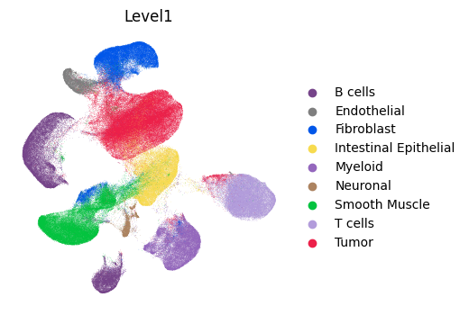
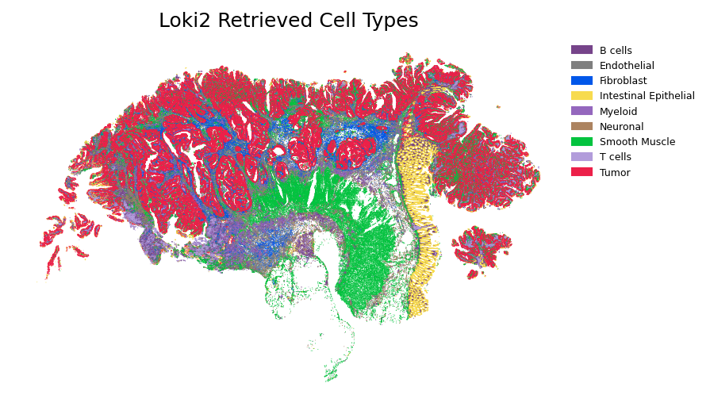
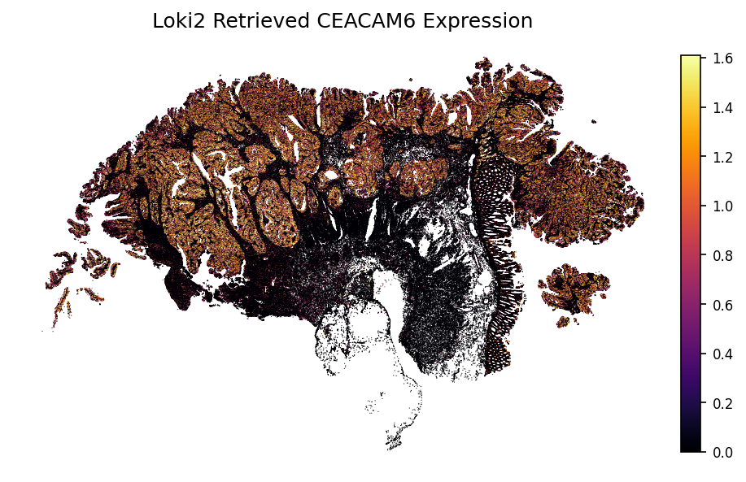
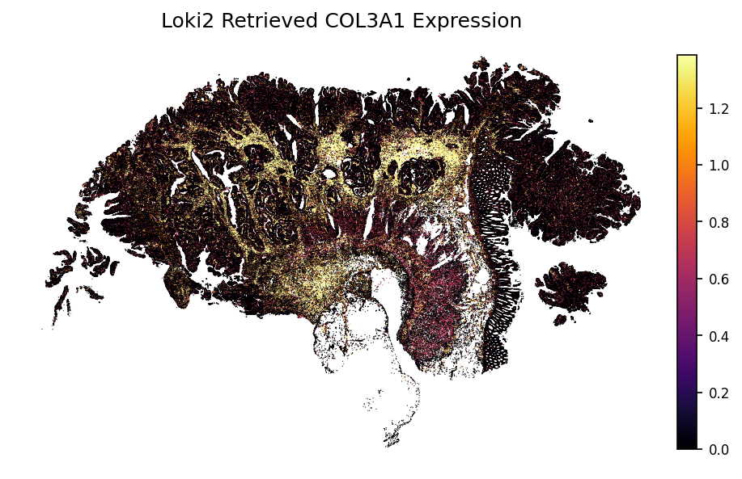
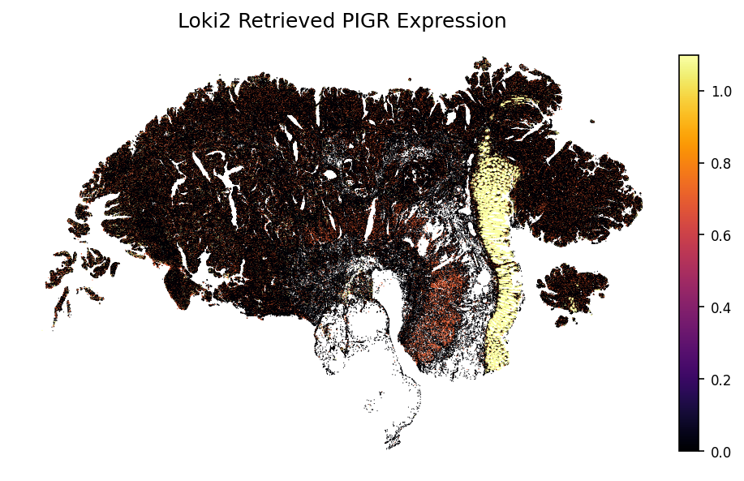

Loki2 Morphology-to-Transcriptome Retrieval
This notebook demonstrates how to retrieve transcriptomic profiles from Loki2 cell morphological features using cross-modal contrastive learning.
Data Requirements
The example data is stored in the directory ../data/morph_retrieve, which can be donwloaded from Google Drive.
You will need:
Paired morphology-transcriptome data for finetuning
Single-cell RNA-seq reference atlas
H&E image to retrieve transcriptome data
OmiCLIP model checkpoint for transcriptome encoding
Prepare Fintuning Data
Extract transcriptomic embeddings using OmiCLIP and pair them with morphological embeddings from Loki2. This creates paired finetuning data that links morphological features to transcriptomic profiles. The data is organized into shards for efficient finetuning with WebDataset format.
Please follow Loki Notebooks to creat the conda enverionment loki_env for contrastive learning.
Please put (and remane) the OmiCLIP checkpoint omiclip.pt to ../src/loki2/.
conda activate loki_env
DATA_PATH="../data/morph_retrieve/P1CRC_VISIUMHD_LOKI2_mask.h5ad"
OUTPUT="../outputs/morph_retrieve/output/P1CRC_cell_trans_emb_raw.pt"
python ../src/loki2/encode_trans.py "$DATA_PATH" \
--output "$OUTPUT" \
--batch-size 1024 \
--num-threads 32 \
--device cuda
python ../src/loki2/cl/prepare_training.py \
--dataset-name P1CRC \
--trans-path "$OUTPUT" \
--morph-path ../data/morph_retrieve/P1CRC_cell_morph_emb.pt \
--output-dir ../outputs/morph_retrieve/output/P1CRC_train \
--shard-size 10000
Finetuning
Train a neural network projection model using contrastive learning to align morphological and transcriptomic embedding spaces. The model learns to project embeddings from both modalities into a shared space where similar cells from different modalities are close together. This enables cross-modal retrieval between morphology and transcriptome.
conda activate loki_env
DATASET="${DATASET:-P1CRC}"
RUN_NAME="${RUN_NAME:-${DATASET}_wds_vanilla}"
RUN_DIR="../outputs/morph_retrieve/output/runs/${RUN_NAME}"
TRAIN_DIR="../outputs/morph_retrieve/output/P1CRC_train/${DATASET}/train"
VAL_DIR="../outputs/morph_retrieve/output/P1CRC_train/${DATASET}/val"
TRAIN_META="${TRAIN_DIR}/manifest_train.csv"
VAL_META="${VAL_DIR}/manifest_val.csv"
if [[ ! -f "${TRAIN_META}" ]]; then
echo "Missing train manifest: ${TRAIN_META}" >&2
exit 1
fi
if [[ ! -f "${VAL_META}" ]]; then
echo "Missing validation manifest: ${VAL_META}" >&2
exit 1
fi
mapfile -t TRAIN_SHARDS < <(find "${TRAIN_DIR}" -maxdepth 1 -type f -name 'shard-*.tar' | sort)
mapfile -t VAL_SHARDS < <(find "${VAL_DIR}" -maxdepth 1 -type f -name 'shard-*.tar' | sort)
if [[ ${#TRAIN_SHARDS[@]} -eq 0 ]]; then
echo "No training shards found in ${TRAIN_DIR}" >&2
exit 1
fi
if [[ ${#VAL_SHARDS[@]} -eq 0 ]]; then
echo "No validation shards found in ${VAL_DIR}" >&2
exit 1
fi
TRAIN_SHARD_LIST=$(IFS=, ; echo "${TRAIN_SHARDS[*]}")
VAL_SHARD_LIST=$(IFS=, ; echo "${VAL_SHARDS[*]}")
mkdir -p "${RUN_DIR}"
python ../src/loki2/cl/train_projection_wds.py \
--train-shards "${TRAIN_SHARD_LIST}" \
--train-meta "${TRAIN_META}" \
--val-shards "${VAL_SHARD_LIST}" \
--val-meta "${VAL_META}" \
--num-layers 1 \
--batch-size 4096 \
--epochs 20 \
--lr 5e-4 \
--device cuda \
--amp \
--save-every 1 \
--output-dir "${RUN_DIR}" \
--log-file train.log
Retrieve from scRNA Data
Encode single-cell RNA-seq reference data and project both morphological and transcriptomic embeddings into the shared space. Then use nearest neighbor search to retrieve matching transcriptomic profiles for spatial cells based on their morphological features. This enables cell type transfer from scRNA-seq to spatial data and gene expression prediction from morphology.
conda activate loki_env
sam="CRC_sc"
DATA_PATH="../data/morph_retrieve/CRC_sc.h5ad"
OUTPUT="../outputs/morph_retrieve/output/${sam}_trans.pt"
python ../src/loki2/encode_trans.py "$DATA_PATH" \
--output "$OUTPUT" \
--batch-size 1024 \
--num-threads 32 \
--device cuda
conda deactivate
conda activate loki2_env
CHECKPOINT_DIR="../outputs/morph_retrieve/output/runs/P1CRC_wds_vanilla"
# Set the epoch to use for projection (default: 20)
EPOCH=${EPOCH:-20}
CKPT_PATH="${CHECKPOINT_DIR}/projection_cl_epoch${EPOCH}.pt"
if [[ ! -f "${CKPT_PATH}" ]]; then
echo "Checkpoint not found: ${CKPT_PATH}" >&2
exit 1
fi
declare -A SAMPLE_MAP=(
["Cancer_P2"]="P2CRC"
)
# --------------------------------------------------
# 1) Project morphology embeddings for each sample
# --------------------------------------------------
for label in "${!SAMPLE_MAP[@]}"; do
dataset="${SAMPLE_MAP[$label]}"
morph_path="${ROOT_PATH}/Visium_HD_Human_Colon_${label}_tissue_image_PYRAMIDAL_cells.pt"
output_dir="${ROOT_PATH}/output/data_projection/${dataset}"
if [[ ! -f "${morph_path}" ]]; then
echo "Skipping ${label}: missing morphology embeddings at ${morph_path}" >&2
continue
fi
echo "Projecting ${label} (dataset: ${dataset})"
mkdir -p "${output_dir}"
python /condo/wanglab/shared/wxc/Dinov2/loki2_source_code/src/loki2/cl/project_raw_embeddings.py \
--checkpoint "${CKPT_PATH}" \
--morph-path "${morph_path}" \
--modality morph \
--batch-size 4096 \
--normalized \
--tag "${label}_epoch${EPOCH}" \
--output-dir "${output_dir}"
done
# --------------------------------------------------
# 2) Project transcript embeddings once
# --------------------------------------------------
TRANS_PATH="${ROOT_PATH}/output/CRC_sc_trans.pt"
OUTPUT_DIR="${ROOT_PATH}/output/data_projection/sc"
if [[ ! -f "${TRANS_PATH}" ]]; then
echo "Transcription embeddings missing: ${TRANS_PATH}" >&2
exit 1
fi
mkdir -p "${OUTPUT_DIR}"
python /condo/wanglab/shared/wxc/Dinov2/loki2_source_code/src/loki2/cl/project_raw_embeddings.py \
--checkpoint "${CKPT_PATH}" \
--trans-path "${TRANS_PATH}" \
--modality trans \
--batch-size 4096 \
--normalized \
--tag "epoch${EPOCH}" \
--output-dir "${OUTPUT_DIR}"
# --------------------------------------------------
# 3) Retrieval for each sample
# --------------------------------------------------
pt_dir="${ROOT_PATH}/output/data_projection"
trans_path="/condo/wanglab/shared/wxc/Dinov2/loki2_source_code/data/morph_retrieve/CRC_sc.h5ad"
for label in "${!SAMPLE_MAP[@]}"; do
dataset="${SAMPLE_MAP[$label]}"
output_dir="${ROOT_PATH}/output/result_centroid/${dataset}/retrieve_epoch${EPOCH}"
mkdir -p "${output_dir}"
echo "Processing sample: ${dataset}, output directory: ${output_dir}"
python /condo/wanglab/shared/wxc/Dinov2/loki2_source_code/src/loki2/retrieve_from_sc.py \
"${dataset}" "${label}" "${EPOCH}" "${output_dir}" "${pt_dir}" "${trans_path}"
done
import numpy as np
import pandas as pd
import scanpy as sc
import torch
from matplotlib import pyplot as plt
import matplotlib.patches as mpatches
import loki2.retrieve
import loki2.plot
Load Retrieval Results
Load the projected embeddings and retrieval results. The retrieval results contain indices of matching cells from the single-cell reference atlas and their similarity scores, which can be used to predict cell types and gene expression patterns.
sample_name = "P2CRC"
proj_path = "../outputs/morph_retrieve/output/data_projection/P2CRC/morph_proj_Cancer_P2_epoch20.npz"
result_dir = "../outputs/morph_retrieve/output/result_centroid/retrieve_epoch20"
celltype_path = f"{result_dir}/cell_type_assignments_{sample_name}.csv"
result_path = f"{result_dir}/retr_from_atlas_{sample_name}.pt"
data_morph = np.load(proj_path, allow_pickle=True)
list(data_morph.keys())
['row_index', 'cell_id', 'positions', 'morph_proj', 'morph_proj_norm']
celltype_df = pd.read_csv(celltype_path, index_col=0)
result = torch.load(result_path)
indices = result['indices']
values = result['scores']
sc_ad = sc.read_h5ad("../data/morph_retrieve/CRC_sc.h5ad")
sc_ad.obsm['X_umap'] = sc_ad.obs[['UMAP1', 'UMAP2']].values
sc_ad
AnnData object with n_obs × n_vars = 260506 × 18082
obs: 'Patient', 'BC', 'QCFilter', 'Level1', 'Level2', 'UMAP1', 'UMAP2'
var: 'gene_ids', 'feature_types', 'genome'
obsm: 'X_umap'
source_labels = sc_ad.obs['Level1']
level1_retrieved_top1 = source_labels.iloc[indices[:, 0]]
preds, _ = loki2.retrieve.knn_majority_vote(indices, source_labels)
preds_w, counts = loki2.retrieve.knn_majority_vote(indices, source_labels, scores=values)
preds_t, _ = loki2.retrieve.knn_majority_vote(indices, source_labels, scores=values, temperature=0.07)
Plot scRNA Data
Visualize the single-cell RNA-seq reference atlas in UMAP space, colored by cell type annotations. This provides context for understanding the reference data used for retrieval.
# ensure the category order matches your desired mapping
sc_ad.obs['Level1'] = sc_ad.obs['Level1'].astype('category')
# apply the colors to the categories
sc_ad.uns['Level1_colors'] = [loki2.plot.SC_COLOR_DICT[c] for c in sc_ad.obs['Level1'].cat.categories]
# plot
sc.pl.umap(sc_ad, color='Level1', frameon=False)

Plot Loki2 Retrieval Results
Visualize the retrieved cell types and gene expression patterns mapped onto the spatial tissue coordinates.
plt.figure(figsize=(6, 6), dpi=150)
plt.scatter(data_morph['positions'][:, 0], data_morph['positions'][:, 1],
c=loki2.plot.labels_to_hex(preds_t, loki2.plot.SC_COLOR_DICT),
s=0.2, edgecolors='none', linewidths=0)
plt.gca().invert_yaxis()
plt.gca().set_aspect('equal')
plt.title("Loki2 Retrieved Cell Types")
plt.axis("off")
# -------- Legend --------
unique_classes = np.unique(preds_t)
handles = []
for cls in unique_classes:
color = loki2.plot.SC_COLOR_DICT.get(cls, "#000000") # fallback color if missing
label = cls
patch = mpatches.Patch(color=color, label=label)
handles.append(patch)
plt.legend(
handles=handles,
loc="upper right",
fontsize=6,
frameon=False,
bbox_to_anchor=(1.25, 1.0) # nudge legend outside the plot if needed
)
plt.show()

gene = 'CEACAM6'
loki2.plot.plot_gene(sc_ad, indices, data_morph, gene)

gene = 'COL3A1'
loki2.plot.plot_gene(sc_ad, indices, data_morph, gene)

gene = 'PIGR'
loki2.plot.plot_gene(sc_ad, indices, data_morph, gene)
